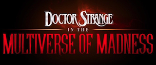

El cazador de tesoros Victor Sullivan recluta a Nathan Drake para que lo ayude a recuperar una fortuna de 500 años. Lo que comienza como un atraco se convierte en una carrera de trotamundos para alcanzar el premio.
En su segundo año luchando contra el crimen, Batman explora la corrupción existente en la ciudad de Gotham y el vínculo de esta con su propia familia. Además, entrará en conflicto con un asesino en serie conocido como "el Acertijo".
El Dr. Stephen Strange abre un portal al multiverso al utilizar un hechizo prohibido. Ahora su equipo debe enfrentarse a una amenaza enorme.
